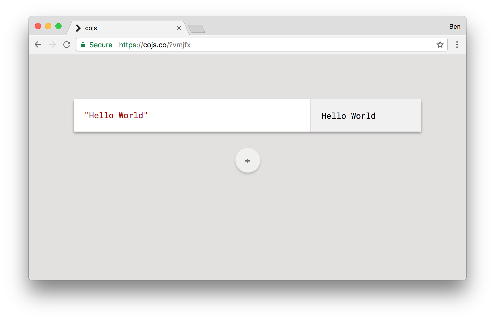

Making a lot of things
Thanks
Hi, I'm Ben
Developer/Adventurer based in Oxford, UK
You might know me from …
2014 - FutureJS
2015 - Full Stack Fest
2016 - Full Stack Fest (microtalk)
Demos
[phones]
[light hacks]
This is not a demo talk
Making a lot of things
#microhacks
[dither]
[cursory-hack]
[cubes]
[scan]
[cardboctober]
[webgl-hacks]
Benefits
Satifying
Fun
Understanding libraries & APIs
Exploring ideas
Small things can lead to bigger things
[ruby]
[publishing rooms]
What features enhance creativity?
1. Exploration
2. Constraint
[igor]
My freedom thus consists in my moving about within the narrow frame that I have assigned to myself for each one of my undertakings. I shall go even further: my freedom will be so much the greater and more meaningful the more narrowly I limit my field of action and the more I surround myself with obstacles. Whatever diminishes constraint diminishes strength. The more constraints one imposes, the more one frees oneself of the claims that shackle the spirit.Igor Stravinsky
Constraint breeds creativity
Today: changing constraints
1. Coding
2. Making
Coding
cojs.co
Evaluating JavaScript
JavaScript ⊂ Text
How do we test if text is JavaScript?
Text → Tokens → Abstract Syntax Tree
if(!is_javascript(src)) return
const htm = `
<html><head></head><body>
<script>
const output = ${src}
/* todo: print output */
</script>
</body></html>
`
const blob = new Blob([htm], {type: 'text/html'})
const url = URL.createObjectURL(blob)
iframe.src = url
It works!
…ish
only for simple expressions
const output =
x = 10
y = 32
x + y
= 10
Modify our syntax tree
x = 10
y = 32
x + y
Program
ExpressionStatement
AssignmentExpression
Operator (=)
Identifier (x)
Literal (10)
ExpressionStatement
AssignmentExpression
Operator (=)
Identifier (y)
Literal (32)
ExpressionStatement
BinaryExpression
Operator (+)
Identifier (x)
Identifier (y)

ast-tools & recast
x = 10
y = 32
x + y
↓
O(x = O(10))
O(y = O(32))
O(O(x) + O(y))